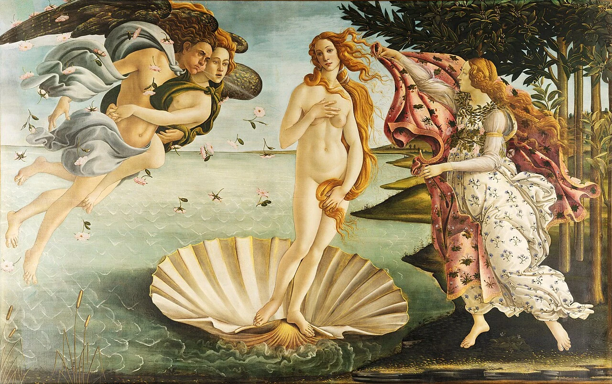

中央だけを見ない。左の風神→髪→右の布へ、曲線をつないで風を見る。
《ヴィーナスの誕生》は、中央の女神だけ見ても十分きれいです。でも左右まで視線を広げると、髪や布が同じ風に押され、画面全体が一方向へ動いていることに気づきます。「線を追う」だけで印象が変わりやすい一枚です。
1. 中央のヴィーナスを一つの形として見る
顔の表情より先に、頭から足までの輪郭を一本の長い曲線として目で追います。
明るい身体が画面中央の大きな核になります。
ヴィーナスの身体は画面のほぼ中央にありますが、左右対称にまっすぐ立っているわけではありません。肩、腰、膝が少しずつずれ、長いS字のような流れができます。まず顔ではなく、頭から足先まで身体の傾きを一気に見ると、静かな立ち姿にも動きがあると分かります。
貝殻の上に立つ姿は現実には少し不安定です。それでも倒れそうには見えないのは、左右の人物や髪、布の流れが中央を囲み、画面全体でヴィーナスを支えているからです。
2. 「線」が気持ちいい
身体、髪、布、海岸線。なめらかな輪郭線が画面のいろいろな場所にあります。
立体感より、線の流れそのものが美しさを作っています。
ボッティチェリでは、人体の立体感だけでなく輪郭線そのものが目を楽しませます。肩から腕、腰から脚、長い髪の先まで、線が急に途切れず滑るようにつながります。彫刻のような重量感より、描かれた線の優雅さが先に来るところが特徴です。
美術館では、ヴィーナスの外側の輪郭を一周したあと、髪や布の内部の線へ移ってみてください。似た曲線が画面の各所で繰り返され、人物・風・衣服が一つのリズムで結ばれています。
3. 左の風神から風が始まる
画面左の風神が息を吹き、ヴィーナスを岸へ送ります。
風の方向を意識すると、左から中央へ自然に視線が動きます。
左側の風神たちは、物語上ヴィーナスを岸へ送る存在ですが、構図の上でも重要です。身体が斜めに重なり、頬をふくらませ、右方向へ風を吹くことで、画面左から中央へ強い流れができます。
目に見えない風は、それ自体を描けません。そこで作者は、花が飛ぶ方向、髪の傾き、布のふくらみを同じ方向へそろえます。「風を描く」のではなく「風の結果を描く」と考えると、画面の仕掛けが見えてきます。
4. 髪が見えない風を見せる
長い髪は大きくうねりながら右へ流れます。
目に見えない風が、髪の曲線によって見える形へ変わっています。

ヴィーナスの髪は、身体を隠す役割だけでなく、画面で最も長く動く線の一つです。頭から肩、腰、脚へ何度も折れ曲がりながら流れるため、中央に立つ人物の周囲へ視線を循環させます。
髪を一本一本数える必要はありません。大きな束として「どちらへ流れているか」を見て、その方向が左の風や右の布とつながるか確かめるだけで十分です。
5. 右の布まで視線をつなぐ
右側の人物が広げる布にも大きな曲線があります。
左から来た風が画面右まで続いているように感じられます。
右側の人物が広げる布は、ヴィーナスを迎えるためのものですが、画面の終点としても働きます。左から来た風と髪の流れが最後に大きな布へぶつかり、そこで受け止められるように見えます。
布の輪郭は大きく波打ち、花模様の細かさとは対照的です。まず大きな外形を見てから模様へ近づくと、装飾の細部に埋もれず構図を保ったまま鑑賞できます。
6. 奥行きより平らな美しさを楽しむ
人物や海、木々が舞台装置のように平面的に見える部分があります。
自然な空間かより、人物と線が画面上でどう並んでいるかを見る方が面白い作品です。
身体の比率や足元の空間を細かく見ると、現実の人体や遠近と少し違和感を覚えるところがあります。しかし、この作品ではその「正確さ」より、線と人物の配置が作る優雅さが優先されています。
ルネサンス＝すべて写実的、と思って見ると戸惑いますが、同じ時代でも画家の答えは一つではありません。ボッティチェリでは、奥行きの正確さより平面上の線の美しさを見ると魅力が伝わりやすくなります。実物では中央だけでなく、左右端まで一続きの舞台として眺めてみてください。
最後に、中央のヴィーナスだけを見ていた最初の視線へ戻ります。今度は左の風神から髪、身体、右の布までを一続きで追ってみてください。一人の女神の絵だったものが、画面全体を風が横切る一つの構成に変われば、この作品の見方はかなり広がっています。
もし時間があれば、人物の顔ではなく画面の外周だけを一周してみてください。左の人物、海岸線、木々、右の布が中央を囲み、ヴィーナスを額縁のように支えています。中央の名画として覚えていた作品が、左右まで使った大きな装飾的構成として見えるはずです。
中央だけを見ない。左の風神→髪→右の布へ、曲線をつないで風を見る。